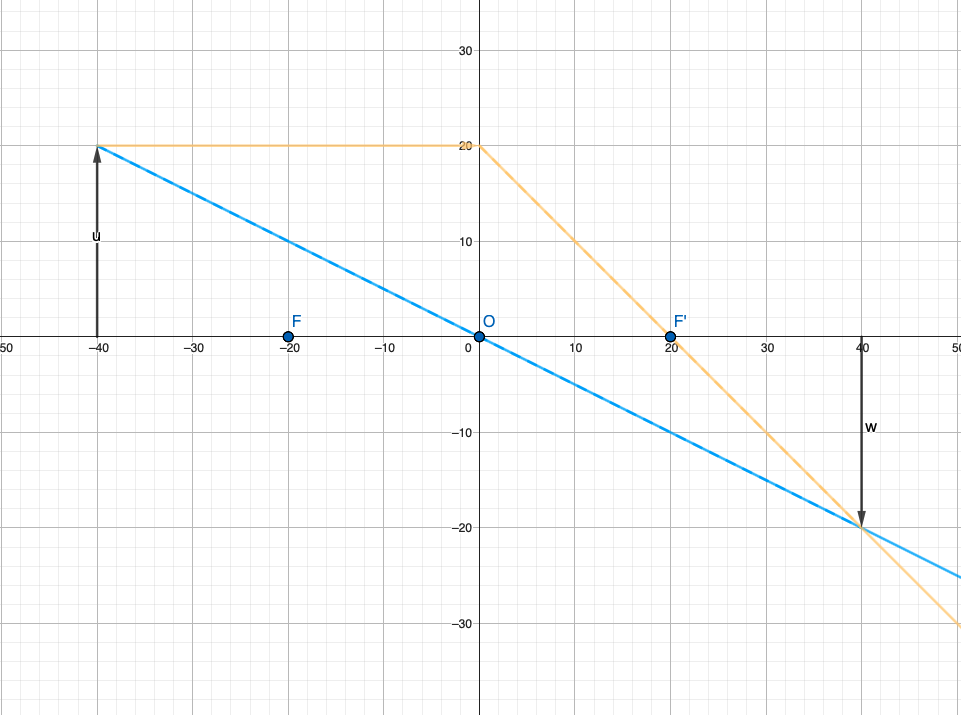
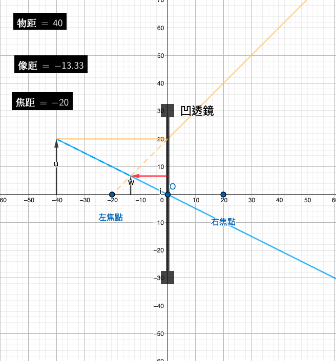
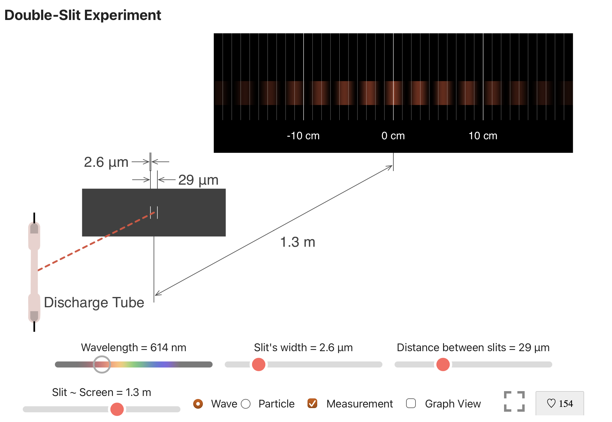
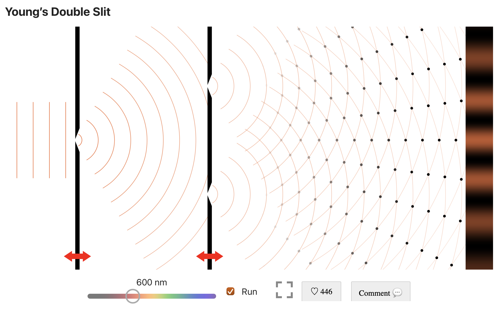
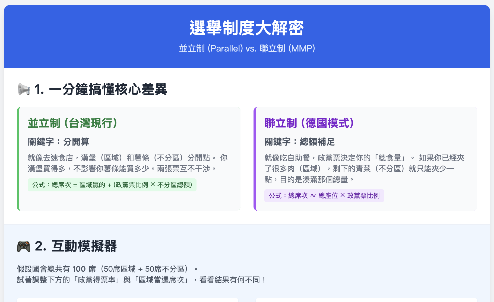

GeoGebra凸透鏡成像
透過 GeoGebra 動態呈現凸透鏡的主光線與成像。
前往外部資源 ↗TEACHING RESOURCES
彙整適合延伸課堂討論的外部模擬、資訊教材與公民議題工具。
← 回模擬首頁RESOURCE COLLECTION

GeoGebra透過 GeoGebra 動態呈現凸透鏡的主光線與成像。
前往外部資源 ↗
GeoGebra調整物體位置，觀察凹透鏡虛像的位置與大小。
前往外部資源 ↗
JavaLab以三維視角連結波前傳播與干涉條紋。
前往外部資源 ↗
JavaLab用二維模型比較路徑差與亮暗紋位置。
前往外部資源 ↗兩份資料庫課程講義，從基礎語法開始練習。
查看教材 ↗
公民 × 數學調整選民分布與票數，理解制度如何影響結果。
開啟工具 ↗